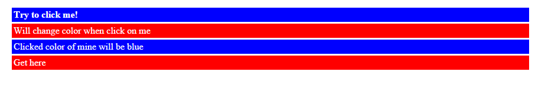

jQuery Traversal
What is jQuery Traversal
Traversal in jQuery is used to select HTML elements based on given conditions. jQuery provides powerful DOM traversal methods to select elements in a document randomly as well as in sequential method. Most of the DOM Traversal Methods do not modify the jQuery object and they are used to filter out elements from a document based on given conditions.
jQuery has different jquery traversal methods we can use. Let's look at each of them
jQuery .add() Method
Given a jQuery object that represents a set of DOM elements, the jquery .add() method constructs a new jQuery object from the union of those elements and the ones passed into the method. The argument to .add() can be pretty much anything that $() accepts, including a jQuery selector expression, references to DOM elements or an HTML snippet.
jQuery add() method Syntax.add( selector )
Let's look at example of how we can use the jquery traversal .add() method
Example
Below example program finds all divs and makes a border. Then adds all paragraphs to the jQuery object to set their backgrounds green.
jQuery add() method examples
$( "div" ).css( "border", "2px solid red" ) .add( "p" ).css( "background", "green" );
When you run the above jQuery add() method example, it will produce the following output

Try It Now
jQuery addBack() Method
jQuery .addBack() method adds DOM previous element to the current set and maintains them in the internal stack which will take care of changes to the matched set of elements.
A Set of new elements will be pushed onto the stack when DOM traversal method being called. The advantage withjQuery .addBack() method is to get access on the previous set of elements.
.addBack( [selector ] )
The below example explains how to use jQuery.addBack() method and also we will understand the difference before using jQuery addBack() method and after using jQuery addBack() method
jQuery addBack() method example
$( "div.left, div.right" ).find( "div, div > p" ).addClass( "border" ); // First Example $( "div.before-addback" ).find( "p" ).addClass( "background" ); // Second Example $( "div.after-addback" ).find( "p" ).addBack().addClass( "background" );Output
The above example produces the following result.

Try It Now
jQuery .children () Method
In jQuery, the children() method is different from jQuery find() method method. meaning .children() method only travels a single level down the DOM tree where as .find() can traverse down multiple levels to select elements.
It accepts optional parameter i.e., selector expression of the same type.
children() method syntax.children( [selector ] )
Let's look at an example of using the jQuery children() traversal method.
$( "#container" ).click(function ( event ) {
$( "*" ).removeClass( "hilite" );
var kids = $( event.target ).children();
var len = kids.addClass( "hilite" ).length;
$( "#results span:first" ).text( len );
$( "#results span:last" ).text( event.target.tagName );
event.preventDefault();
});
OutputThe above example produces the following result.

Try It Now
jQuery closest() method
jQuery closest() method returns the first ancestors of the selected element that matched the selector in the DOM tree. It is able to find out the elements and their ancestors in the DOM tree and constructs a new jQuery object from the matched elements.
In jQuery, parents() and closest() are similar in action both of them traverse the DOM tree.
closest([selector])
jQuery closest() method example
$( document ).on( "click", function( event ) {
$( event.target ).closest( "li" ).toggleClass( "hilight" );
})
Output

Try It Now
jQuery each() method
Iterate over a jQuery object, executing a function for each matched element.
The jquery each() method is designed to make DOM looping constructs concise and less error-prone. When called it iterates over the DOM elements that are part of the jQuery object. Each time the callback runs, it is passed the current loop iteration, beginning from 0. More importantly, the callback is fired in the context of the current DOM element, so the keyword this refers to the element.
.each( function )
Example
$( document.body ).click(function() {
$( "div" ).each(function( i ) {
if ( this.style.color !== "green" ) {
this.style.color = "red";
} else {
this.style.color = "";
}
});
});
Output
The above example code produces the following result

Try It Now
jQuery eq() Selector
The :eq() selector selects a HTML element with a specific index number. As we know that index starts from 0 not from 1. eq() method also start it’s index from 0 to select element. Here index represents that position of the element in the group.
.eq(index)
The following example has 5 div html elements in which we can see selecting particular element by calling eq( 2 ) method by passing position of that element.
Example
$( "body" ).find( "div" ).eq( 2 ).addClass( "red" ); // it finds the second div in the html body and change it to red color.Output

Try It Now
jQuery find() Selector
The jQuery find() method in jQuery simply constructs a jQuery object which can be capable of holding the descendants of each element of selected element in the DOM tree. In jQuery find() and children() seems to be similar but only minor difference comes into picture in the case of traverse a single level down the DOM tree[.children()].
Note: To get all of the descendant elements from the DOM tree, Try to use the "*" selector. A descendant is a child, grandchild, great-grandchild, and so on.
.find( selector )
jQuery find() selector Example Program
Here is the example to look into the usage of the .find() method in jQuery. In this example, keeping the
tag text as group of span elements for each word and finding the word which matches the letter ‘t’ in
tag to manipulating matched elements with CSS styles by using .find( ":contains('t')" ).
var newText = $( "p" ).text().split( " " ).join( "</span> <span>" );
newText = "<span>" + newText + "</span>";
$( "p" )
.html( newText )
.find( "span" )
.hover(function() {
$( this ).addClass( "titile" );
}, function() {
$( this ).removeClass( "titile" );
})
.end()
.find( ":contains('t')" )
.css({
"font-style": "italic",
"font-weight": "bolder"
});
Output
Try It Now
jQuery prev() method
The prev() method constructs a jQuery object which will get the immediate sibling element of the selected element in DOM tree. Siblings are the elements which same parent element.
jQuery prev() method syntax
prev( [selector ] )
In the syntax, the selector is an optional parameter to pass and Specifies a selector expression to narrow down the previous sibling search.
Let us look at the following example to understand about the .prev() jQuery method
jQuery prev () method example program
var $curr = $( "#start" );
$curr.css( "background", "#10b48f" );
$( "button" ).click(function() {
$curr = $curr.prev();
$( "div" ).css( "background", "" );
$curr.css( "background", "#10b48f" );
});
Output
Try It Now